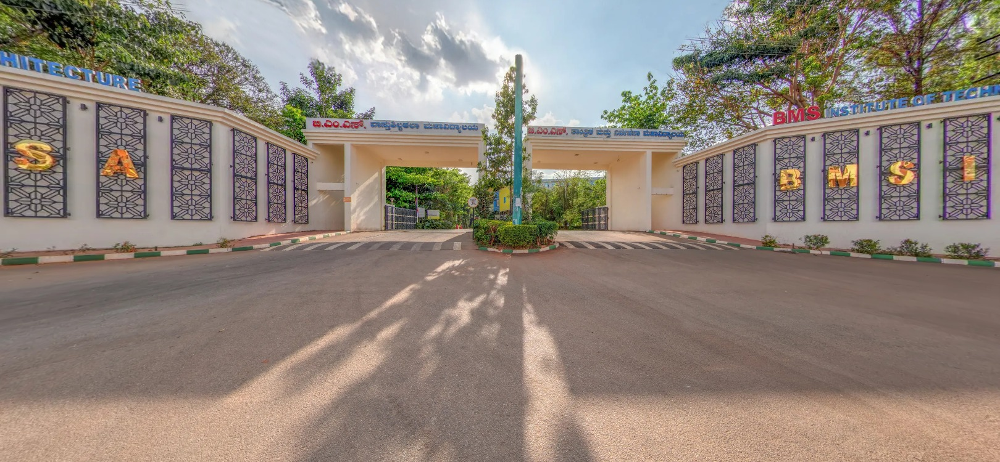

A central place for students to report lost belongings, post found items and reconnect with what matters.

Items reported
Reported lost
Reported found
Returned to owners
Pick a block to see everything reported there.
Three quick steps to get a belonging back to its owner.
Submit the details of an item you lost or found, with location, date and an optional photo.
Browse and filter reports by category, location and type to find a match.
Use the contact details on the listing to recover your item.
Tell us what you lost and where. Someone may already have found it.
Report a lost item